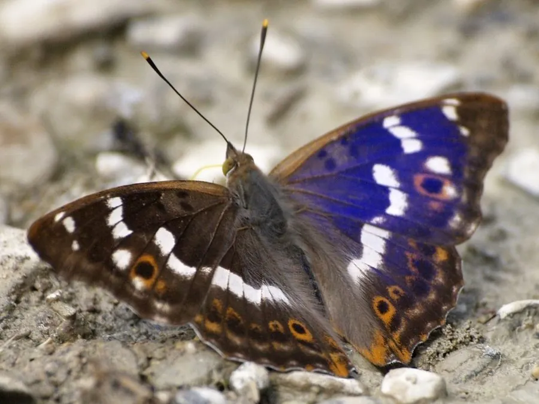

昆虫 · 动物界
柳紫闪蛱蝶 Apatura ilia

翅面黑褐而雄蝶泛蓝紫金属光泽的中型蛱蝶，幼虫以柳树和杨树为食，常见于河岸柳林与林缘。
- 分类
- 门节肢动物门纲昆虫纲目鳞翅目科蛱蝶科属闪蛱蝶属
- 栖息环境
- 河岸柳林、杨树林带、公园与行道树旁
- 地理分布
- 欧洲、中亚至东亚温带，中国华北、东北、西北、华中
- 保护级别
- 暂无保护级别，种群稳定，城市绿地中常见
物种志
柳紫闪蛱蝶的翅展约五至六厘米。翅面黑褐色，雄蝶前翅中部有一大片蓝紫色闪光鳞区，随视角明暗变化，像被涂了一层紫漆；雌蝶没有这种光泽，翅面斑纹更发达。前翅缀有白色斑块，后翅外缘有一条橙色带和一列黑色眼斑，翅反面灰褐，具波状横纹，停歇时与树皮十分接近。
它分布于欧洲、中亚至东亚的温带地区，中国华北、东北、西北和华中均有记录，栖息在河岸柳林、公园和行道树旁。成虫飞行迅速，常停在树干、石面和湿地上吸食树汁、腐果汁液与矿物质，雄蝶有领域行为，会驱赶闯入的同类。幼虫以柳属和杨属植物为食，以幼虫越冬，一年发生一至两代。它尚不受威胁，是城市绿地中较易见到的闪蛱蝶。
形态与习性
- 翅展约五至六厘米
- 雄蝶光泽前翅中部大片蓝紫闪光鳞区
- 雌蝶无金属光泽，斑纹更发达
- 食性幼虫取食柳属、杨属植物叶片
- 越冬以幼虫越冬，一年一至两代
- 习性爱吸树汁、腐果汁液与湿地矿物质
趣味知识
- 雄蝶翅上的紫色在阳光下会突然亮起来，转个角度又暗下去，全靠鳞片结构反射光线。
- 它常停在湿泥地上吸水，从中获取钠和矿物质，雄蝶尤其热衷。
- 幼虫把柳叶啃出一个个缺口，是河岸柳树上最常见的蛱蝶幼虫之一。